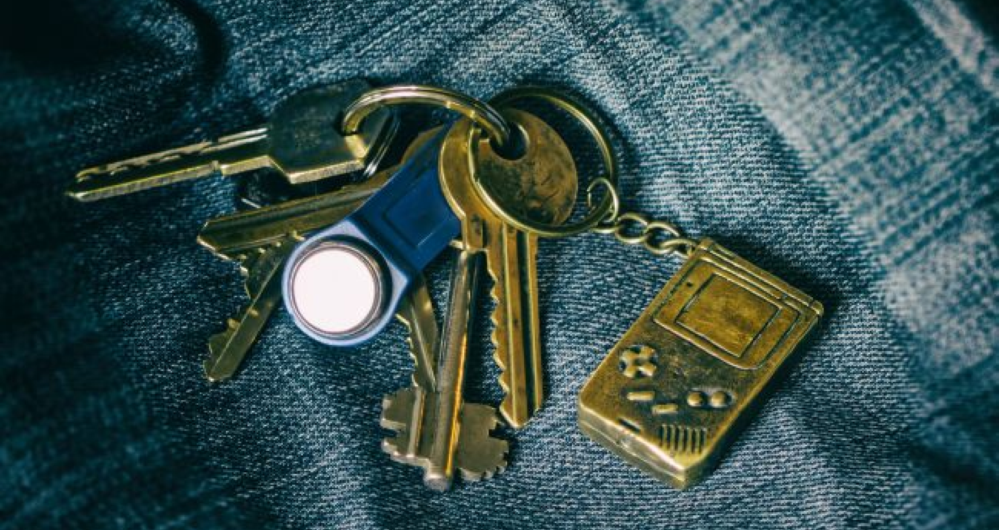

Історія брелоків на ключі
Зміст
Що таке брелок?
Брелок — це невеликий аксесуар, який зазвичай кріплять до ключів, сумок або мобільних телефонів. Він може виконувати як декоративну функцію, так і практичну, наприклад, нести важливу інформацію або слугувати інструментом. Брелоки бувають різноманітними за формою, матеріалами та дизайном, і мають багату історію, що сягає давніх часів.
Походження брелоків
Перші брелоки з’явилися ще в середньовіччі, коли багаті люди носили на ланцюжках монети або металеві кружки з гербами. Ці аксесуари не тільки підкреслювали статус власника, але й слугували символом його професії чи соціального становища. Наприклад, кавалери прикрашали ланцюжки для годинників брелоками з гербами, що дозволяло визначати їхній статус або рід занять. У багатьох аристократів на ланцюжках було до 10 брелоків, виготовлених переважно з золота та прикрашених дорогоцінним камінням, слоновою кісткою або емаллю. У XIX столітті кількість брелоків на ланцюжку зменшилася до 2-3, і їх стали використовувати в основному як пам’ятні сувеніри, що зберігали як подарунки від близьких людей.
Різновиди брелоків та їхні функції
Брелоки постійно змінювалися за своїми функціями та формами. Їх класифікують за різними ознаками, проте всі вони мають одну спільну характеристику — можливість кріплення за допомогою кільця, мотузки або ланцюжка.
- Звичайні брелоки. Найпоширеніші аксесуари, які часто мають символіку міст або країн, пов'язані з улюбленими фільмами або містять логотипи компаній.
- Практичні брелоки. Вироби з додатковими функціями: відкривачки, запальнички, компаси або електронні аксесуари для управління автосигналізацією.
- Для телефонів. Підвіски, які кріплять до мобільних пристроїв. Вони можуть бути декоративними або мати функції, як-от блимаючі сигнали під час дзвінків.
- Подарункові брелоки. Якісні вироби з особливим дизайном, часто прикрашені гравіюванням, дорогоцінними матеріалами. Їх дарують на пам'ятні події, наприклад, дівчатам чи колегам.
- Готельні брелоки. Раніше використовувалися для ключів у готелях із зазначенням номера кімнати, але з часом їх замінили на магнітні картки.
Крім того, брелоки можуть бути чоловічими, жіночими або унісекс, а також дитячими. Вони підходять як для колекціонерів, так і для звичайних користувачів, оскільки різноманітність дизайнів дозволяє знайти аксесуар для будь-якого смаку.